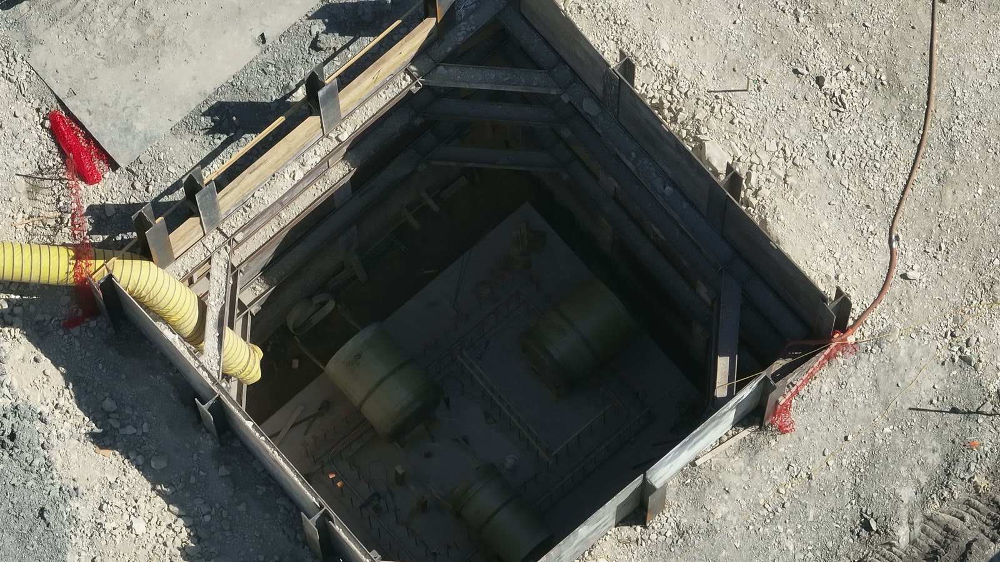

Drones on the map
Remote ID and radio fingerprints — Avata, Autel, Mini, and the rest — as contacts you can hold until you clear them.
Fusion Sensor
Fusion Sensor receives Remote ID and radio energy on 2.4 and 5.8 GHz, plus ADS-B for crewed aircraft. Authorized aircraft are marked as authorized. Anything else that is transmitting is flagged. Run it on a laptop you already own. Fusion Sensor is receive-only. It does not interfere with aircraft.
Hardware for the $2,000 license: laptop, ESP32-S3 Remote ID, ADS-B 1090, SDR on 2.4 and 5.8 GHz, antennas, USB, power. The $4,500 kit ships that radio stack and includes initial setup plus a first monitoring session with you.
One console. Independent layers. A view your operations team can keep.
Remote ID and radio fingerprints — Avata, Autel, Mini, and the rest — as contacts you can hold until you clear them.
Authorized aircraft are marked as authorized. Other transmitting aircraft are flagged. The log is the record when someone asks what was in the air.
ADS-B 1090 for airliners, general aviation, and military. Airfields labeled so drone contacts appear against real geography.
2.4 and 5.8 GHz occupancy, hop-set energy, analog FPV when it is on the air. Time, band, and energy in the export.
Own the console. Add radios if you do not already have them. Pay online.
You have the radios
$2,000 one-time
The console on your laptop: map, spectrum, authorized-aircraft list, and log. Fingerprints for Avata, Autel, Mini, and similar aircraft.
We ship the radio stack
$4,500 one-time
Everything in Fusion Sensor, plus ESP32-S3 Remote ID, ADS-B 1090, SDR on 2.4 and 5.8, antennas, initial setup, and a first monitoring session with you.
Buy Fusion Sensor · $2,000 Add radios · $4,500
CyberReaper is a restricted TX unlock. Briefing is available to the U.S. Government, the Department of War, and other qualified entities. Request a briefing.
Emergency cards, a fillable site file, and the risk book for a named venue. Emailed after the deposit posts.
$250 Part 107 emergency brief
Emergency and contingency procedures the PIC briefs the crew before launch — one card per problem.
What's included
$500 EAP / first-in file
A written observation file you keep with the emergency action plan — people, ways out, holes, confined space, medical access.
What's included
$750 venue risk file
The risk file for a venue and a date. Score people, air, and ground before gates. Update it when conditions change. Close it with an after-action.
What's included
These packs are why the console can name what it hears. They ship with both Fusion Sensor SKUs. Built on thousands of hours of real-world missions, enhanced by an AI neural-net training pipeline.
1090 MHz. Airline, business, general aviation, and military. Aircraft registry on the same map.
ICAO labels and runway overlays. Large, regional, municipal, heliport, and military fields.
ASTM F3411. ESP32-S3. Bluetooth LE 1M, coded S8, extended advertisements.
Thousands of hours of labeled RF IQ and visual from real-world missions. They train the console to name what it hears.
Thirty-five airframe types. Wideband RF detect and ID on raw IQ and spectrograms. OcuSync-class dual-band, hop-set occupancy, and family-level ID. Priority weights on high-volume consumer airframes. In-pack extract for the neural-net pipeline.
Drone RF detect and ID. Lab chamber and outdoor range captures. Burst timing and spectral features the console uses at runtime.
Outdoor UAV RF with Bluetooth and Wi-Fi co-channel on the same scene. IEEE scene corpus. Multi-RAT occupancy so a hopping control link is not confused with nearby BLE or 802.11 energy.
UAV IQ-imbalance fingerprints in SigMF. Device-level RF identity past airframe family. Transmitter front-end signatures — DAC imbalance, LO leakage, I/Q offset — trained as RFFI features in the neural-net pipeline.
Classic consumer-airframe RF ML corpus plus few-shot IQ on later DJI-class and toy frames. Background-class negatives. Detect and class on 2.4 GHz and 5.8 GHz job bands before fusion with RFUAV and field missions.
HackRF-native analog FPV video IQ. 5.8 GHz analog downlink energy, 10 MHz-class spans, spectrogram CFAR, and time-band-energy logs. Trains the analog-video HOLD path the console shows as red drone contacts.
Modulation classification. Baseline for what the spectrum is doing.
Modern RF machine-learning pipeline. Spectrum patterns at scale.
2.4 GHz and 5 GHz Wi-Fi and Bluetooth IQ. Low-cost SDR recognition.
Same-model Wi-Fi device fingerprint. Hard identity across look-alike radios.
Sub-GHz LoRa device fingerprint. Multi-SDR federated pack.
Advertisements, company IDs, ESP32-class BLE PHY. Same family as the Remote ID receiver.
RF plus radar multi-modal UAV scenes. LoRa spectrum in the same pack.
Multi-modal CUAS fusion research. Sensors combined on one map.
Visual detect and track. Overhead video combined with radio contacts.
Multi-camera visual tracking combined with radio contacts.
The radio side of Fusion Sensor. It scans 2.4 GHz and 5.8 GHz and matches the pattern: analog FPV, hopping digital links, dual-band control. Time, band, and energy appear on the display and in the log.
| Scan | Multi-channel dwells on 2.4 GHz and 5.8 GHz. Occupancy, bandwidth, duty, energy. |
|---|---|
| Analog FPV | 5.8 GHz analog video energy. This frame: 5800–5810 MHz, 10 MHz span. |
| OcuSync-class | Digital control and video links. Dual-band pattern across 2.4 GHz and 5.8 GHz. |
| Frequency hopping | Hop-set occupancy and cadence on the job bands. |
| Pattern analysis | Energy, bandwidth, hop timing, dual-band correlation. Named classes on the display. |
| Log | Time, band, energy, class. Export the monitoring log. |
| Console | Fusion Sensor. Local map, spectrum, authorized-aircraft list, log. |
|---|---|
| Remote ID | ASTM F3411 / OpenDroneID. ESP32-S3 receive. Bluetooth LE 1M, coded S8, extended advertisements. |
| ADS-B | 1090 MHz. Airline, business, general aviation, military. OpenSky / tar1090 registry on the same map. |
| Airports | OurAirports. ICAO labels. Runway overlays. Large, regional, municipal, heliport, military fields. |
| RF | 2.4 GHz and 5.8 GHz. Analog FPV energy on 5.8 GHz. Spectrum: time, band, energy. |
| Fusion packs | Thousands of hours of real-world missions, enhanced by an AI neural-net training pipeline. Included in both SKUs. |
| Host | Laptop on the job. macOS 13+ or Linux. Python 3.10+. Browser. USB 2.0. Local network. |
| Bind | Local console. Default port 8788. |
| Log | Time, band, energy, RID, ADS-B. Export the monitoring log. |
| Host | Laptop. macOS 13+ or Linux. Python 3.10+. Browser. USB 2.0. |
|---|---|
| Remote ID | ESP32-S3 OpenDroneID receiver. Bluetooth LE 1M, coded S8, extended advertisements. |
| ADS-B | 1090 MHz receiver. |
| SDR | Receive on 2.4 GHz and 5.8 GHz. |
| Antennas | Matched to those bands. |
| Cables / power | USB. Site power for the laptop and the radios. |
CyberReaper is a restricted capability. Briefing is available to the U.S. Government, the Department of War, and other qualified entities. It is not offered for public sale.
That is a flying job, not the software license. We walk the property, fly it, and write the observation file. Radio is not in this product.
Operations keep the file with the plan they already owe — construction EAP 1926.35, excavation 1926.651–.652, confined space 1926 Subpart AA, first-in rescue. Not an OSHA inspection. Not a PE stamp.
Dark Sky Systems LLC
DS-RA-2026-0614 · Rev 0 · Page 1 of 2
Observation file · Walk · Fly · Written file

| No. | Domain | Observation | Hook |
|---|---|---|---|
| 01 | People | No workers visible in the excavation in IMG_07. Anyone in the vault is not in a grade count. | 1926.35(b)(3) |
| 02 | Egress | No ladder, stair, or ramp visible from pit floor to grade. | 1926.651(c)(2) |
| 03 | Shoring | Timber and steel trench box with walers in place on all four walls. | 1926.652 |
| 04 | Confined space | Limited entry. Pipe vaults on the floor. Yellow flexible duct into the west wall. | 1926.1202–.1203 |
| 05 | Fall / lip | Open excavation at grade. Orange fence on two corners. Hose and spoil at the lip. | 1926.501(b)(7) |
| 06 | Ground | Gravel, steel, concrete pad north of the box. Walking surface is the lip. | 1926.25 |
| 07 | Rescue | Patient-out is vertical. Grade is the only staging in the still. No retrieval line visible. | 1926.1211 · 1926.50 |
Observation. Protective system is in the still. Ladder is not. Ventilation duct is. No person in frame. Client may confirm egress and rescue before anyone enters. We do not classify the space or stamp the permit.
Dark Sky Systems LLC · SOS 806750312Page 1 of 2
Dark Sky Systems LLC
DS-RA-2026-0614 · Rev 0 · Page 2 of 2
Compliance annex · Operations use
The employer keeps the plan. This still is dated evidence of the hole they have to plan — excavation, confined space, rescue, first-in.
| Employer already owes | Rule / practice | In this file |
|---|---|---|
| Construction EAP | 29 CFR 1926.35 | Named vault, window, still of the hole |
| Egress from trench ≥ 4 ft | 1926.651(c)(2) | No ladder/stair/ramp visible in IMG_07 |
| Protective system | 1926.652 | Trench box and walers on four walls |
| Confined spaces in construction | 1926 Subpart AA · 1926.1203 | Limited entry, vaults, vent duct |
| Rescue and emergency services | 1926.1211 · 1926.50 | Vertical haul, grade staging, no retrieval line in still |
| Fall into excavations / holes | 1926.501(b)(7) | Open lip, partial orange fence |
| First-in site overview | NFPA 1620 / 1660 practice | Nadir of the box. Access is the lip |
Limits. Observation file. Not an OSHA inspection, not a PE stamp, not a confined-space permit, not a fire-code plan review. We do not write the employer’s emergency action plan. Radio / Fusion Sensor is a separate line and is not in this file.
Walk · Fly · Written filePage 2 of 2